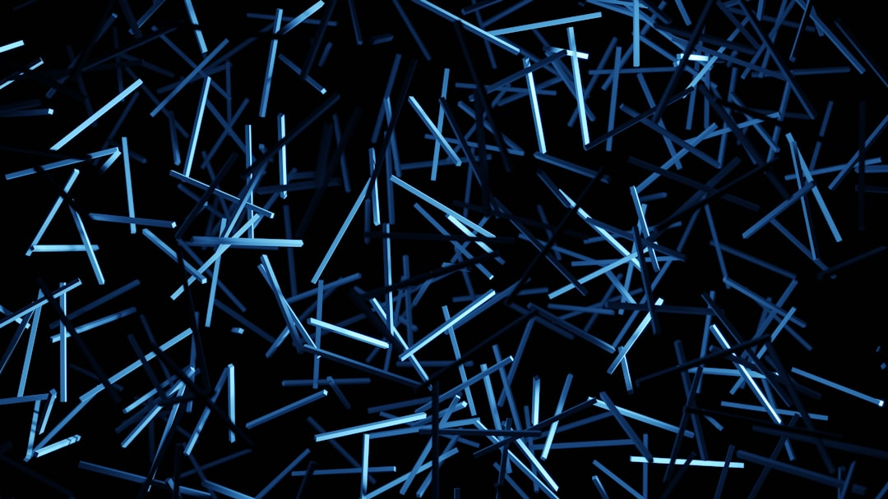

**Unmasking the Cosmic Conspiracy: The Pseudoscience of Cosmic Ray Precognition**
**Unmasking the Cosmic Conspiracy: The Pseudoscience of Cosmic Ray Precognition** In a world where corporate interests beckon us to accept their every whim, it's time to peel back the thin veneer of scientific legitimacy and expose a phenomenon that has quietly crept into the fringes of popular science: cosmic ray precognition. While certain circles of believers tout this bizarre intersection of astrophysics and psychic ability as the next major scientific breakthrough, we must peel back the layers and examine how this supposed premonition phenomenon fits into a broader societal narrative. ### Cosmic Rays: The Gateway to the Unknown Cosmic rays are high-energy particles that hail from the depths of outer space. Their very nature conjures images of explosive supernovae and enigmatic black holes. But instead of marveling at the miracle of the universe, a vocal minority of thinkers has twisted these celestial wanderers into something far more sinister: a supposed means of precognition. The idea, which posits that exposure to cosmic rays can somehow unlock hidden psychic abilities—allowing humans to foresee events before they occur—has taken root in some corners of popular science. Believers claim that some mind-blowing scientific discoveries can be attributed to the influence of cosmic rays on our neurobiology. Is this just pseudoscientific nonsense? Absolutely. The scientific community widely dismisses these assertions as unsubstantiated balderdash, yet the message of “anything can happen” fits right into a capitalist society hungry for alternative answers to complex problems. ### A Culture of Accepting the Fantastic Why do ideas like cosmic ray precognition gain traction in a post-truth era where misinformation runs rampant? It is a phenomenon that reflects a deeper societal malaise; the frustrations of a disenfranchised population yearning to find meaning where there seems to be none. In an age when workers endure exploitation and economic inequalities soar, these outlandish claims serve as a fragile lifeboat. The allure of escaping the mundane is potent: the belief that perhaps, just perhaps, we might tap into otherworldly insights to defy the oppressive systems that bind us. If the universe holds secrets that could unlock a hidden potential, then we are left with hope, however misguided, in our ability to influence the future. ### Unearthing the Real Agenda Beneath the surface fascination with cosmic rays and psychic phenomena, we find an insidious culture pushing anti-scientific narratives under the guise of enlightenment. Here lies a pattern as old as society itself: the exploitation of human vulnerability by charlatans seeking profit at any cost. It's crucial to discuss who benefits from these narratives. The ramifications of encouraging reliance on cosmic ray precognition—encouraging people to value psychic revelations over tangible scientific evidence—can have dire consequences. Countless individuals fall prey to fraudulent schemes, occult practices, or self-proclaimed psychics hawking "solutions" to life’s challenges while obscuring rational, actionable strategies for societal change. ### Science: The Real Power Source True power lies not in cosmic mystical forces but in collective action and scientific inquiry that aims to dismantle the structures suppressing us. Instead of chasing ephemeral psychic experiences, we must secure meaningful change through political mobilization. The revolutionary ideas are ours if we actively seek them out and share knowledge, driving forward the truth toward social justice and equity. Those advocating cosmic ray precognition distract from urgent actions we can collectively undertake to fight against climate change, systemic racism, and economic disparity. It becomes ever more crucial for us to champion rigorous, evidence-based scientific understanding while emphasizing the importance of social solidarity. We need the re-emergence of scientific literacy to help navigate a turbulent and confusing world, rather than embracing untested claims rooted in celestial nonsense. ### The Call to Action So, what can you do? The battle against pseudoscience and existential despair begins with education and advocacy. Engage your communities in dialogue about what science truly represents, emphasizing data over conjecture. Utilize platforms to highlight the absurdities of pseudo-phenomena while presenting tangible solutions and alternatives to the problems we face. Preparation is key: arm yourself with knowledge so you can dissect misinformation as it arises. Fight back against corporations and quacks who seek to profit from our uncertainty. Remember, the cosmos doesn’t
Updated 2025-08-03 06:53 UTC